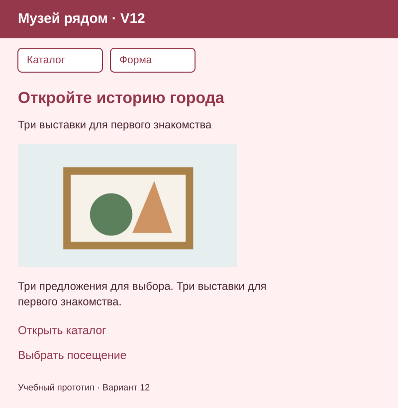
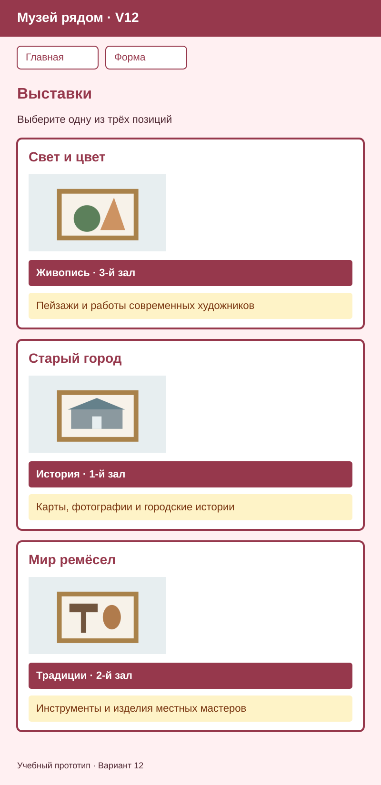
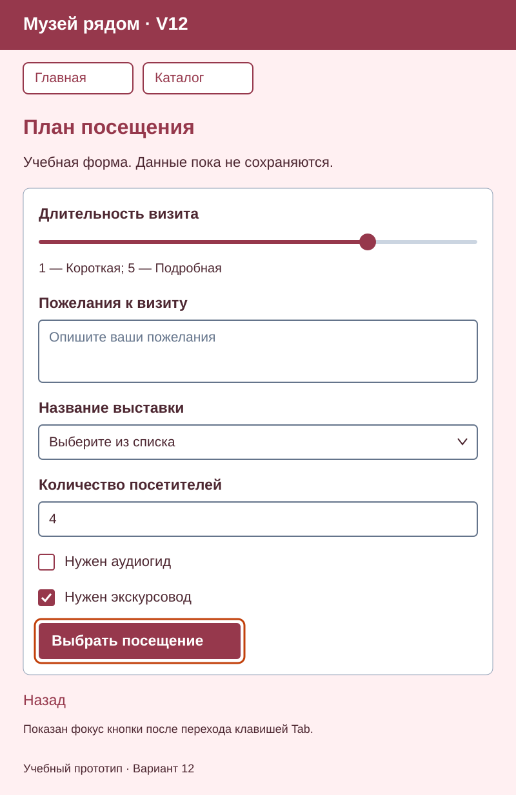
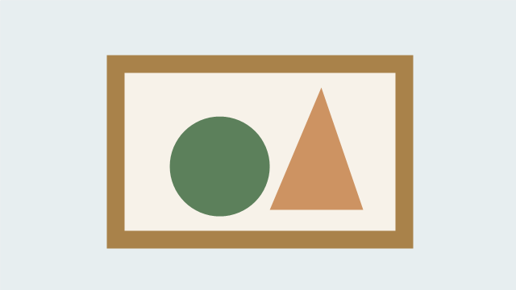
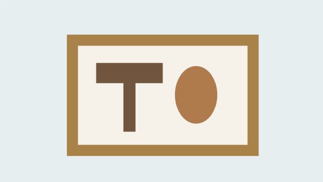

Вариант 12 — Музей рядом, пара 15
Классы, размеры и отступы. Продолжайте папку Variant12-web. Сохраните свой номер, тексты, изображения, порядок и начальные значения. Фамилия в приложении не требуется.
Статья объясняет способ выполнения; Вариант 00 показывает работу преподавателя. Здесь — самостоятельное задание вашего номера.
Задание
Подключите один style.css ко всем трём HTML-файлам. Добавьте класс page
основной части каждой страницы и класс card трём карточкам каталога.
Настройте общий шрифт, ширину, внутренние и внешние отступы и рамки по статье.
Сохраните прежние данные и цвета. Карточки пока стоят сверху вниз.
К концу этой пары достаточно трёх отдельных карточек с рамками и отступами и общего CSS на всех страницах. Полное оформление карточек и формы продолжится на следующей практике; изображения ниже показывают ориентир к завершению двух практик.
Ориентир оформления
Главная

Каталог

Форма

Схемы показывают настоящие данные вашего варианта; это не снимки браузера и не изображения для вставки вместо HTML. Точное совпадение пикселей не требуется. Оранжевый контур формы обозначает фокус после Tab, постоянно показывать его не нужно.
В каждом меню — две ссылки на другие страницы: «Главная», «Каталог», «Форма» без ссылки на открытую страницу. У каждой страницы один h1 внутри main и понятный title с названием приложения и номером.
Цвета и стили
| Что оформить | Селектор | Значения |
|---|---|---|
| Фон и основной текст | body |
Фон #FFF0F2; текст #4D2731 |
| Заголовки и ссылки | h1, h2, a |
Акцент #96384C; подчёркивание обычных ссылок сохранить |
| Общая основная часть | main.page |
width: 92%; max-width: 56rem; margin: 0 auto; padding: 1rem |
| Размеры | * |
box-sizing: border-box |
| Шрифт | body |
font-family: Arial, sans-serif; font-size: 1rem; line-height: 1.5; margin: 0 |
| Карточки | .card |
border: 1px solid #94A3B8; padding: 1rem; margin-bottom: 1rem |
Содержание главной страницы
| Элемент | Ваш текст или изображение |
|---|---|
| Название приложения | Музей рядом · V12 |
| Заголовок | Откройте историю города |
| Короткое пояснение | Три выставки для первого знакомства |
| Описание | Три предложения для выбора. Три выставки для первого знакомства. |
| Основное изображение | item1.png |
| Переход к каталогу | Открыть каталог |
| Переход к форме | Выбрать посещение |
| Подпись | Учебный прототип · Вариант 12 |

«Открыть каталог» ведёт на catalog.html, «Выбрать посещение» — на form.html.
Содержание каталога
Название — «Выставки». Пояснение — «Выберите одну из трёх позиций».
| № | Название | Характеристика | Описание | Изображение |
|---|---|---|---|---|
| 1 | Свет и цвет | Живопись · 3-й зал | Пейзажи и работы современных художников | item1.png  |
| 2 | Старый город | История · 1-й зал | Карты, фотографии и городские истории | item2.png  |
| 3 | Мир ремёсел | Традиции · 2-й зал | Инструменты и изделия местных мастеров | item3.png  |

Сохраните PNG по ссылкам в Variant12-web/images под прежними именами из таблицы. Имя скачанного файла может быть длинным хешем: переименуйте его в указанное имя; для главной нужен item1.png. Используйте все три позиции строго в указанном порядке; изображения сохраняют пропорции. У каждой позиции — отдельный article.card, h2, изображение с содержательным alt, характеристика p.specs и описание p.description.
Содержание формы
Название — «План посещения». Шесть элементов идут сверху вниз строго в порядке строк.
| Порядок | Видимая подпись | Элемент | Данные и начальное состояние |
|---|---|---|---|
| 1 | Длительность визита | Ползунок | От 1 до 5; начальное значение 4. Края: «Короткая» и «Подробная» |
| 2 | Пожелания к визиту | textarea |
Подсказка: «Опишите ваши пожелания»; заполнение необязательно |
| 3 | Название выставки | select |
Первая строка — пустой выбор; затем Свет и цвет; Старый город; Мир ремёсел. Выбор обязателен |
| 4 | Количество посетителей | Числовое поле | Целое количество от 1; шаг 1; начальное значение 4; поле обязательно |
| 5 | Нужен аудиогид | Независимый флажок | Не выбран в начале |
| 6 | Нужен экскурсовод | Независимый флажок | Выбран в начале |
После элементов — кнопка «Выбрать посещение»; за формой — ссылка «Назад» на index.html. Сохраните видимые подписи, связи for и уникального id, атрибуты name и проверку ввода. Список начинается с пустого выбора, количество — обязательное целое от 1 с шагом 1. Комментарий необязателен; подсказка не заменяет подпись. Флажки переключаются независимо. GET показывает параметры в адресе без сервера, хранения и обработки; данные учебные, вымышленные.
Что проверить и показать
| Действие | Результат |
|---|---|
| Открыть три страницы | Во всех подключён общий CSS; тексты и изображения сохранены |
| Открыть каталог | Три отдельные карточки сверху вниз с рамками и отступами |
| Проверить меню | Две ссылки на другие страницы; переходы работают |
Сохраните всю папку Variant12-web. Итог покажите преподавателю; отдельный отчёт по шагам не требуется.
Ещё в компьютерном классе сохраните на телефоне публичную статью о Flexbox и viewport с объяснением, кодом и всеми таблицами и проверьте без интернета. Для общей письменной работы на бумаге возьмите ручку.
Выбрать вариант или вернуться к занятиям курса.